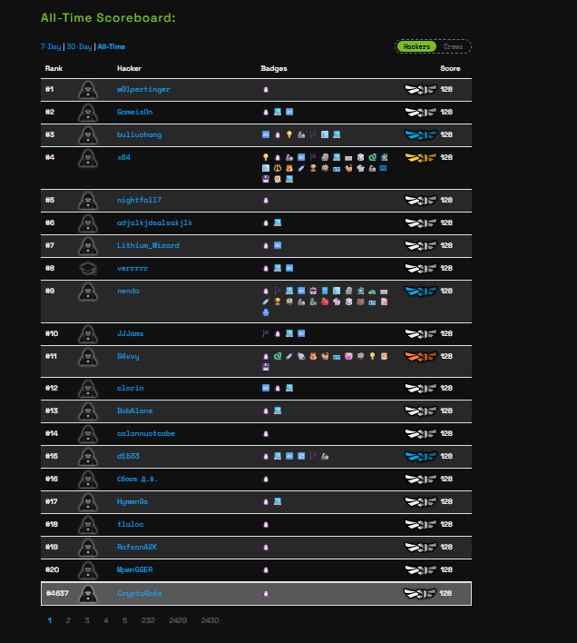

🐧 Manuel technique Linux — Linux Luminarium¶
Synthèse complète organisée comme le Linux Luminarium de pwn.college : architecture des flux, variables, processus, permissions et commandes.
Les 16 modules du Linux Luminarium¶
pwn.college organise son dojo « Linux Luminarium » en 16 modules, pour un total de 128 labos. Ce document reprend cette structure officielle telle quelle ; chaque module ci-dessous indique combien de ses labos sont couverts par vos notes.
| # | Module | Labos couverts |
| 1 | Pondering Paths — Explorer les chemins | 4 / 8 |
| 2 | Comprehending Commands — Comprendre les commandes | 2 / 15 |
| 3 | Digesting Documentation — Lire la documentation | 3 / 7 |
| 4 | File Globbing — Le globbing (jokers du shell) | 6 / 10 |
| 5 | Practicing Piping — Tuyauterie et redirections | 12 / 15 |
| 6 | Data Manipulation — Manipulation de données | 6 / 6 |
| 7 | Shell Variables — Variables du shell | 8 / 8 |
| 8 | Processes and Jobs — Processus et contrôle des tâches | 8 / 10 |
| 9 | Untangling Users — Comprendre les utilisateurs | 4 / 4 |
| 10 | Perceiving Permissions — Comprendre les permissions | 7 / 8 |
| 11 | Chaining Commands — Enchaîner les commandes et scripter | 12 / 12 |
| 12 | Terminal Multiplexing — Multiplexage de terminaux | 6 / 6 |
| 13 | Pondering PATH — Comprendre la variable PATH | 5 / 5 |
| 14 | Silly Shenanigans — Petites bêtises system | 6 / 6 |
| 15 | Daring Destruction — Destruction osée | 5 / 5 |
Le module « Hello Hackers » (introduction) n'est pas couvert par ces notes.
➡ Voir le classement pwn.college
Module 1 — Pondering Paths¶
Explorer les chemins · 4 / 8 labos couverts dans ces notes
Les bases des chemins Linux : arborescence, racine, répertoire de travail courant, chemins relatifs et raccourcis.
Labo 1 — Chemins absolus¶
Définition. Tout système de fichiers Linux s'organise en arbre inversé, dont la racine est désignée par le caractère unique /. Un chemin absolu spécifie la position exacte d'une ressource en résolvant l'intégralité des dossiers depuis cette racine.
Syntaxe :
| /nom_dossier/nom_sous_dossier/executable |
Labo 2 — Le répertoire de travail courant (cd)¶
Définition. Chaque processus (comme une session Bash) possède une propriété système appelée Current Working Directory (répertoire de travail actuel). La commande interne cd modifie ce contexte.
Syntaxe :
| cd /chemin/vers/dossier_cible |
Labo 3 — Chemins relatifs¶
Définition. Un chemin relatif n'est pas préfixé par la racine /. Le noyau l'interprète en le concaténant à la suite du répertoire de travail actuel du processus.
Syntaxe :
| dossier_local/fichier_cible |
Labo 4 — Le raccourci ~ (home)¶
Définition. Le métacaractère ~ est un raccourci interprété par le shell : avant de transmettre l'argument à un binaire, il est remplacé par le chemin absolu du répertoire personnel de l'utilisateur (/home/utilisateur).
Syntaxe :
| ~/nom_fichier |
Module 2 — Comprehending Commands¶
Comprendre les commandes · 2 / 15 labos couverts dans ces notes
Panorama des commandes de base (cat, ls, touch, rm, mv, cp, mkdir…). Ces notes couvrent surtout la recherche de fichiers et les liens symboliques.
Labo 1 — Recherche d'inodes (find)¶
Définition. L'utilitaire find parcourt l'arborescence pour localiser des fichiers selon des critères (nom, taille, droits). La redirection d'erreur 2>/dev/null permet d'isoler les résultats valides en éliminant les erreurs d'accès dues à l'absence de privilèges.
Syntaxe :
| find /chemin_recherche -name "nom_cible" 2>/dev/null |
Labo 2 — Liens symboliques (ln -s)¶
Définition. Un lien symbolique est un fichier spécial de type l dont l'unique contenu est le chemin d'accès vers un fichier cible réel. Lors d'un accès, le noyau résout automatiquement cette indirection.
Syntaxe :
| ln -s /chemin/fichier_reel /chemin/lien_virtuel |
Module 3 — Digesting Documentation¶
Lire la documentation · 3 / 7 labos couverts dans ces notes
Savoir se documenter soi-même : arguments, pages de man, recherche par mot-clé.
Labo 1 — Arguments et commutateurs¶
Définition. Les exécutables et scripts modifient leur comportement à l'aide d'arguments ou de commutateurs passés en ligne de commande lors de l'appel système execve.
Syntaxe :
| executable --argument-long -a |
Labo 2 — Pages de manuel (man)¶
Définition. Le sous-système de manuels documente commandes, API et fichiers de configuration. La navigation se fait via un pager ; la touche q met fin à l'affichage.
Syntaxe :
| man nom_du_programme |
Labo 3 — Recherche par mot-clé (man -k / apropos)¶
Définition. L'option -k interroge l'index de la base de données des manuels pour retourner tous les utilitaires dont la section NAME concorde avec le mot-clé soumis.
Syntaxe :
| man -k mot_clef |
Module 4 — File Globbing¶
Le globbing (jokers du shell) · 6 / 10 labos couverts dans ces notes
Les métacaractères qui permettent au shell d'étendre automatiquement des motifs de noms de fichiers.
Labo 1 — Le joker * (multi-caractères)¶
Définition. Le caractère * déclenche le globbing : le shell analyse le répertoire local et remplace la chaîne par la liste exhaustive des fichiers dont le nom concorde avec le motif (hors séparateur /).
Syntaxe :
| cd /dossier_* |
Labo 2 — Le joker ? (caractère unique)¶
Définition. Le joker ? impose une contrainte de taille exacte : il est remplacé par n'importe quel caractère unique présent à cette position dans le nom du fichier.
Syntaxe :
| cd /?ha?? |
Labo 3 — Classes de caractères ([...])¶
Définition. Les crochets définissent un ensemble de caractères. L'expansion ne valide le fichier que si le caractère à cette position correspond à l'un des éléments listés.
Syntaxe :
| programme fichier_[abc] |
Labo 4 — Globbing intégré au chemin¶
Définition. Le mécanisme d'expansion s'applique à n'importe quel segment d'un chemin, absolu ou relatif, permettant une sélection multiple sans déplacement préalable.
Syntaxe :
| programme /chemin/dossier/fichier_[abc] |
Labo 5 — Négation de classe ([^...])¶
Définition. Placer ^ (ou !) en première position dans [] inverse la condition logique du filtre : le shell retient tous les fichiers dont le nom contient un caractère absent de la liste.
Syntaxe :
| programme [^abc]* |
Labo 6 — Astuce complémentaire — Complétion (Tab)¶
Définition. Le shell intercepte l'appui sur Tab pour interroger le système de fichiers ou la variable $PATH. Il complète automatiquement si l'alternative est unique, ou liste les possibilités en cas d'ambiguïté (double appui).
Syntaxe :
| commande_ou_fichier[Tab] |
Module 5 — Practicing Piping¶
Tuyauterie et redirections · 12 / 15 labos couverts dans ces notes
Redirections de flux (stdin/stdout/stderr), pipes, substitution de processus et tubes nommés.
Labo 1 — Redirection de sortie (>)¶
Définition. L'opérateur > ferme le descripteur de sortie standard d'un processus et le réassocie à l'inode d'un fichier spécifié, en écrasant son contenu.
Syntaxe :
| commande > nom_fichier |
Labo 2 — Multiplexage par descripteur (1> et 2>)¶
Définition. Linux identifie les canaux d'E/S par des entiers : 0 (stdin), 1 (stdout), 2 (stderr). Préciser le numéro devant l'opérateur isole le flux voulu vers une destination indépendante.
Syntaxe :
| commande 1> fichier_donnees 2> fichier_erreurs |
Labo 3 — Redirection d'entrée (<)¶
Définition. L'opérateur < modifie le descripteur d'entrée standard du processus pour l'alimenter avec le contenu d'un fichier statique plutôt qu'avec le clavier.
Syntaxe :
| commande < fichier_entree |
Labo 4 — Le pipe (|)¶
Définition. L'opérateur | interconnecte directement en mémoire la sortie standard du processus amont à l'entrée standard du processus aval, sans passer par le disque.
Syntaxe :
| commande_source | commande_filtre |
Labo 5 — Filtrage inversé (grep -v)¶
Définition. Le commutateur -v inverse la logique de grep : au lieu des lignes qui correspondent au motif, seules les lignes qui ne concordent pas sont affichées.
Syntaxe :
| commande | grep -v "mot_a_exclure" |
Labo 6 — Édition de flux (sed)¶
Définition. sed est un éditeur de flux non interactif. L'expression s/motif/remplacement/g recherche toutes les occurrences du motif dans le texte transmis pour appliquer la substitution à la volée.
Syntaxe :
| commande | sed "s/mot_parasite//g" |
Labo 7 — Duplication de flux (tee)¶
Définition. tee lit l'entrée standard fournie par un pipe et en écrit une copie identique à la fois sur la sortie standard (pour le processus suivant) et dans un ou plusieurs fichiers.
Syntaxe :
| commande1 | tee capture_flux.txt | commande2 |
Labo 8 — Fusion stderr → stdout (2>&1)¶
Définition. Cet opérateur duplique un descripteur vers un autre. 2>&1 envoie le flux d'erreur directement sur le canal de sortie standard, permettant au pipe de traiter l'ensemble des messages.
Syntaxe :
| commande 2>&1 | commande_suivante |
Labo 9 — Substitution de processus en lecture (<())¶
Définition. La notation <(commande) instancie un tube virtuel éphémère : le shell exécute le programme en arrière-plan et le remplace par un chemin virtuel lisible (généralement sous /dev/fd/).
Syntaxe :
| diff <(commande1) <(commande2) |
Labo 10 — Substitution de processus en écriture (>())¶
Définition. À l'inverse, >(commande) génère un point d'entrée virtuel : tout flux écrit dans ce chemin temporaire est immédiatement transmis à l'entrée standard du processus fils.
Syntaxe :
| commande_source | tee >(commande_cible1) >(commande_cible2) |
Labo 11 — Routage simultané des flux (2> >() |)¶
Définition. Technique avancée qui déroute spécifiquement stderr vers un sous-processus via une substitution en écriture, tout en traitant stdout via le pipe classique — séparation hermétique complète des flux.
Syntaxe :
| commande_source 2> >(programme_A) | programme_B |
Labo 12 — Tubes nommés persistants (FIFO / mkfifo)¶
Définition. Un fichier FIFO est un point d'ancrage persistant sur le système de fichiers représentant un tube géré en mémoire vive. Son comportement est bloquant : toute ouverture reste en attente tant que le processus jumeau ne s'est pas connecté.
Syntaxe :
mkfifo /chemin/mon_tube cat /chemin/mon_tube # côté lecture commande > /chemin/mon_tube # côté écriture |
Module 6 — Data Manipulation¶
Manipulation de données · 6 / 6 labos couverts dans ces notes
Outils d'optimisation de flux textuels : traduction/suppression de caractères, tronquage, extraction de colonnes, tri.
Labo 1 — Traduction de caractères (tr)¶
Définition. tr filtre un flux textuel en transposant ou en éliminant des octets spécifiques. L'usage de plages (ex. a-z) permet des conversions de masse comme l'inversion de casse ou le décalage.
Syntaxe :
| commande_source | tr plage_recherche plage_remplacement |
Labo 2 — Suppression de caractères (tr -d)¶
Définition. Associé au commutateur -d, tr agit comme un filtre destructeur : il supprime définitivement, sans substitution, toutes les occurrences des caractères listés.
Syntaxe :
| commande_source | tr -d "caracteres_a_supprimer" |
Labo 3 — Suppression de délimiteurs (tr -d "\n")¶
Définition. Les caractères de contrôle non imprimables, comme le saut de ligne, sont ciblés via des séquences d'échappement. tr -d permet d'effacer ces délimiteurs pour linéariser un flux textuel fragmenté.
Syntaxe :
| commande_source | tr -d "\n" |
Labo 4 — Tronquage de flux (head -n)¶
Définition. head restreint un flux entrant en n'en conservant que la portion supérieure. Le commutateur -n spécifie la limite stricte de lignes à extraire depuis le premier octet reçu.
Syntaxe :
| commande_source | head -n [nombre_lignes] |
Labo 5 — Extraction de colonnes (cut)¶
Définition. cut fragmente les lignes d'un flux pour en extraire des champs verticaux isolés. -d définit le délimiteur logique, -f spécifie l'index du champ à retenir.
Syntaxe :
| commande_source | cut -d "separateur" -f [numero_colonne] |
Labo 6 — Tri de flux (sort)¶
Définition. sort réordonne l'ensemble des lignes d'un flux ou d'un fichier. Par défaut, l'ordre est ASCII/alphabétique croissant ; -n trie numériquement, -r inverse, -u filtre les doublons.
Syntaxe :
| sort /chemin/fichier_source |
Module 7 — Shell Variables¶
Variables du shell · 8 / 8 labos couverts dans ces notes
Stockage, affectation, portée et capture de données textuelles en mémoire.
Labo 1 — Évaluation d'une variable ($)¶
Définition. Les variables du shell stockent des données textuelles en mémoire sous forme de paires clé-valeur. Le caractère $ déclenche l'expansion : le shell remplace la clé par sa valeur associée.
Syntaxe :
| echo $NOM_DE_LA_VARIABLE |
Labo 2 — Affectation (=)¶
Définition. L'enregistrement d'une donnée en mémoire s'effectue via l'opérateur =. La syntaxe interdit tout espace périphérique. Le nom de la clé et sa valeur sont sensibles à la casse.
Syntaxe :
| NOM_VARIABLE=ValeurStockee |
Labo 3 — Protection par guillemets (Quoting)¶
Définition. L'espace est le séparateur de jetons par défaut du shell. Les guillemets doubles "" suspendent cette signification, forçant l'interpréteur à consolider l'ensemble en un seul argument.
Syntaxe :
| NOM_VARIABLE="Valeur avec espaces" |
Labo 4 — Exportation (export)¶
Définition. Par défaut, une variable a une portée locale limitée au shell courant. export l'intègre au bloc des variables d'environnement, héritable par tout processus fils créé ensuite.
Syntaxe :
| export NOM_VARIABLE=Valeur |
Labo 5 — Inspection de l'environnement (env)¶
Définition. env interroge le segment mémoire alloué aux variables d'environnement du processus courant et restitue la liste exhaustive des paires clé-valeur exportées.
Syntaxe :
| env |
Labo 6 — Substitution de commande ($())¶
Définition. La substitution de commande capture la sortie standard d'un sous-processus pour l'affecter dynamiquement en mémoire, en retirant le saut de ligne final.
Syntaxe :
| NOM_VARIABLE=$(commande_a_executer) |
Labo 7 — Capture interactive (read)¶
Définition. La commande interne read suspend l'exécution pour lire une ligne complète depuis l'entrée standard ; le texte capturé est affecté à la clé spécifiée.
Syntaxe :
| read NOM_VARIABLE |
Labo 8 — Lecture directe d'un fichier (read <)¶
Définition. L'association de read avec < permet d'affecter le contenu d'un fichier à une variable sans passer par un sous-processus d'affichage tiers comme cat.
Syntaxe :
| read NOM_VARIABLE < /chemin/fichier_source |
Module 8 — Processes and Jobs¶
Processus et contrôle des tâches · 8 / 10 labos couverts dans ces notes
Lister, signaler, suspendre et relancer des processus ; comprendre les codes de sortie.
Labo 1 — Instantané des processus (ps)¶
Définition. ps interroge les structures du noyau (notamment /proc) pour restituer l'état des processus actifs. Les commutateurs -ef ou aux étendent la portée à l'échelle du système ; ww évite la troncature des arguments.
Syntaxe :
ps aux ps -efww |
Labo 2 — Signal de terminaison (kill / kill -9)¶
Définition. kill distribue un signal (SIGTERM par défaut) à un PID cible. Si le processus résiste, -9 transmet SIGKILL, forçant le noyau à le détruire immédiatement.
Syntaxe :
ps aux | grep [nom_processus] kill [PID] kill -9 [PID] # en cas de résistance |
Labo 3 — Interruption clavier (Ctrl+C / SIGINT)¶
Définition. Ctrl+C génère une interruption acheminée par le pilote de terminal sous forme du signal SIGINT, ciblant le processus au premier plan pour lui demander d'arrêter.
Syntaxe :
| [Pendant l'exécution au premier plan] Ctrl + C |
Labo 4 — Suspension (Ctrl+Z / SIGTSTP)¶
Définition. Ctrl+Z envoie SIGTSTP : le processus actif au premier plan est suspendu (état Stopped), et le contrôle du terminal revient immédiatement au shell.
Syntaxe :
| [Pendant l'exécution au premier plan] Ctrl + Z |
Labo 5 — Reprise au premier plan (fg)¶
Définition. Un processus suspendu n'est pas détruit. fg (Foreground) restaure son exécution et lui rend le contrôle exclusif des entrées/sorties du terminal.
Syntaxe :
fg fg %[numero_job] |
Labo 6 — Reprise en arrière-plan (bg) et états (ps -o stat)¶
Définition. bg relance un processus suspendu pour qu'il s'exécute en arrière-plan. La colonne STAT de ps indique l'état : T (Stopped), S (Sleeping), R (Running), + (premier plan).
Syntaxe :
bg %[numero_job] ps -o user,pid,stat,cmd |
Labo 7 — Lancement direct en arrière-plan (&)¶
Définition. Ajouter & en fin de ligne indique au shell d'instancier immédiatement le processus en arrière-plan, tout en restituant l'invite de commande à l'utilisateur.
Syntaxe :
| /chemin/executable & |
Labo 8 — Code de sortie ($?)¶
Définition. À sa terminaison, chaque commande renvoie un entier appelé code de sortie : 0 signale un succès, un code non nul signale un échec. Le shell le stocke dans la variable spéciale $?.
Syntaxe :
/chemin/programme echo $? |
Module 9 — Untangling Users¶
Comprendre les utilisateurs · 4 / 4 labos couverts dans ces notes
Identité système, changement d'utilisateur et cassage de mots de passe.
Labo 1 — Élévation par substitution d'utilisateur (su)¶
Définition. su est un binaire doté du bit SUID, lui permettant de s'exécuter avec les privilèges de son propriétaire (root). Sans argument, il instancie un sous-shell root après vérification du mot de passe.
Syntaxe :
| su |
Labo 2 — Cassage de hachages (/etc/shadow + john)¶
Définition. Les empreintes chiffrées des mots de passe sont centralisées dans /etc/shadow, accessible uniquement par root. En cas de fuite, john (John the Ripper) automatise une attaque par dictionnaire hors-ligne pour retrouver le mot de passe d'origine.
Syntaxe :
john /chemin/fichier_shadow_compromis john --show /chemin/fichier_shadow_compromis |
Labo 3 — Délégation de privilèges (sudo)¶
Définition. sudo permet à un utilisateur autorisé d'exécuter une commande avec les privilèges de root sans connaître son mot de passe, en s'appuyant sur la politique définie dans /etc/sudoers.
Syntaxe :
| sudo [commande] [arguments] |
Labo 4 — Audit d'identité (id)¶
Définition. id permet d'auditer l'identifiant utilisateur (uid), l'identifiant de groupe principal (gid) et la liste des groupes secondaires du compte courant.
Syntaxe :
| id |
Module 10 — Perceiving Permissions¶
Comprendre les permissions · 7 / 8 labos couverts dans ces notes
Propriété des fichiers, groupes et matrice de permissions (rwx, SUID).
Labo 1 — Propriété d'un fichier (chown)¶
Définition. Chaque inode est associé à un utilisateur propriétaire. chown (Change Owner) modifie dynamiquement ce propriétaire ; le nouveau titulaire hérite des droits associés.
Syntaxe :
| chown [nom_utilisateur] /chemin/fichier |
Labo 2 — Groupe propriétaire (chgrp)¶
Définition. Linux utilise des groupes pour structurer le contrôle d'accès collectif. chgrp (Change Group) modifie l'appartenance de groupe d'un inode, donnant accès à tous ses membres.
Syntaxe :
| chgrp [nom_du_groupe] /chemin/fichier |
Labo 3 — Permissions relatives (chmod +/-)¶
Définition. La sécurité du système de fichiers repose sur trois triplets (u, g, o) de droits r/w/x. En mode relatif (+ / -), chmod ajoute ou révoque un droit précis sans altérer le reste du masque.
Syntaxe :
chmod a+r /chemin/fichier chmod go-wx /chemin/fichier |
Labo 4 — Bit d'exécution (chmod +x)¶
Définition. Le noyau Linux refuse d'exécuter un fichier si le bit x n'est pas explicitement positionné, quelle que soit son extension. chmod +x déclare le fichier comme exécutable légitime.
Syntaxe :
chmod a+x /chemin/programme /chemin/programme |
Labo 5 — Modifications cumulées (chmod mode,mode)¶
Définition. chmod permet d'altérer plusieurs attributs en une seule commande en séparant chaque directive par une virgule (sans espace), en notation symbolique ou octale.
Syntaxe :
chmod u+r,g-w,o+x /chemin/fichier chmod 664 /chemin/fichier |
Labo 6 — Assignation absolue (chmod u=rw...)¶
Définition. Contrairement aux modificateurs relatifs, l'opérateur = écrase intégralement le masque préexistant d'une catégorie : toute permission non spécifiée est révoquée.
Syntaxe :
| chmod u=rw,g=r,o=- /chemin/fichier |
Labo 7 — Le bit SUID (chmod u+s)¶
Définition. Le bit SUID (Set User ID) est un attribut spécial des exécutables : quand il est actif, tout utilisateur habilité à lancer le programme l'exécute avec les privilèges du propriétaire du fichier (souvent root).
Syntaxe :
chmod u+s /chemin/executable /chemin/executable |
Module 11 — Chaining Commands¶
Enchaîner les commandes et scripter · 12 / 12 labos couverts dans ces notes
Séparateurs de commandes, scripts shell, shebang, arguments positionnels et structures conditionnelles.
Labo 1 — Séquence inconditionnelle (;)¶
Définition. Le point-virgule sépare des commandes sur une même ligne, à la façon d'un saut de ligne. Le shell exécute strictement de gauche à droite, sans jamais évaluer le succès de la commande précédente.
Syntaxe :
| commande_A; commande_B; commande_C |
Labo 2 — Enchaînement sur succès (&&)¶
Définition. L'opérateur && subordonne l'exécution de la commande de droite au succès (code 0) de la commande de gauche ; en cas d'échec, le shell court-circuite et ignore la suite.
Syntaxe :
| commande_A && commande_B |
Labo 3 — Enchaînement sur échec (||)¶
Définition. L'opérateur || subordonne l'exécution de la commande de droite à l'échec (code non nul) de la commande de gauche, typiquement pour la gestion d'erreurs.
Syntaxe :
| commande_A || commande_B |
Labo 4 — Exécution par lot d'un script (bash script.sh)¶
Définition. Un script shell (souvent en .sh) regroupe une suite séquentielle de commandes dans un fichier texte. L'appel de l'interpréteur (bash) force son exécution ligne par ligne.
Syntaxe :
echo "commande_1" > script.sh echo "commande_2" >> script.sh bash script.sh |
Labo 5 — Redirection depuis un script¶
Définition. Un script interprété par lot se comporte comme un processus unique : les opérateurs de redirection (>, >>, 2>, <) et de tuyauterie (|) s'appliquent globalement à son invocation.
Syntaxe :
bash script.sh > fichier_de_sortie bash script.sh | /chemin/programme_filtre |
Labo 6 — Script exécutable (./script.sh)¶
Définition. Si un script possède le bit +x, le noyau peut l'exécuter de manière autonome sans appeler explicitement un interpréteur. Le préfixe ./ indique d'exécuter la ressource du répertoire de travail courant.
Syntaxe :
chmod +x script.sh ./script.sh |
Labo 7 — Le Shebang (#!)¶
Définition. Le noyau n'analyse jamais l'extension d'un fichier pour savoir comment le traiter : il inspecte les premiers octets. La séquence
! (Shebang), en toute première ligne, désigne l'interpréteur à¶
charger.
Syntaxe :
echo '#!/bin/bash' > script.sh echo 'echo "Hello"' >> script.sh |
Labo 8 — Arguments positionnels ($1, $2, ...)¶
Définition. Le shell stocke chaque jeton d'argument passé au script dans des variables positionnelles dédiées : $1 pour le premier argument, $2 pour le second, etc.
Syntaxe :
#!/bin/bash echo "$2 $1" |
Labo 9 — Condition if [ == ]¶
Définition. Les scripts intègrent des structures if. L'opérateur == valide l'égalité textuelle entre deux chaînes ; le bloc then s'exécute si la condition est vraie ; fi clôt la structure.
Syntaxe :
#!/bin/bash if [ "$1" == "valeur_cible" ] then commande_en_cas_de_succes fi |
Labo 10 — Branchement alternatif (else)¶
Définition. La clause else définit un bloc de repli exécuté exclusivement lorsque la condition évaluée par le if initial est fausse — sans nécessiter de condition ni de then propres.
Syntaxe :
#!/bin/bash if [ "$1" == "pwn" ] then echo "college" else echo "nope" fi |
Labo 11 — Conditions multiples (elif)¶
Définition. Le mot-clé elif introduit une sous-condition supplémentaire pour valider plus de deux scénarios exclusifs. Le shell évalue de haut en bas et s'arrête au premier bloc vrai.
Syntaxe :
#!/bin/bash if [ "$1" == "hack" ]; then echo "the planet" elif [ "$1" == "pwn" ]; then echo "college" else echo "unknown" fi |
Labo 12 — Lecture rétro-active d'un script (cat / read)¶
Définition. cat permet d'auditer l'intégralité de la logique d'un script. Quand un script utilise read au lieu d'arguments positionnels, il attend une saisie interactive sur stdin, qu'on peut injecter via un pipe.
Syntaxe :
cat /chemin/script_cible echo "saisie_attendue" | /chemin/script_cible |
Module 12 — Terminal Multiplexing¶
Multiplexage de terminaux · 6 / 6 labos couverts dans ces notes
Créer des sessions terminal persistantes qui survivent à une déconnexion, avec screen et tmux.
Labo 1 — Sessions virtuelles (screen)¶
Définition. screen est un multiplexeur de terminaux qui permet de gérer plusieurs terminaux virtuels au sein d'une seule session active — comparable à des onglets de navigateur pour la ligne de commande.
Syntaxe :
screen exit |
Labo 2 — Détacher / rattacher (Ctrl+A, d puis screen -r)¶
Définition. screen peut détacher une session de l'affichage physique sans interrompre les binaires internes. Ctrl+A puis d détache ; le commutateur -r (Reattach) reconnecte la session.
Syntaxe :
Ctrl + A, puis d screen -r |
Labo 3 — Lister les sessions (screen -ls)¶
Définition. Quand plusieurs sessions coexistent en arrière-plan, -ls interroge le répertoire des sockets locaux pour lister chaque session (PID + label). -r suivi de cet identifiant restaure une session précise.
Syntaxe :
screen -ls screen -r [PID_ou_Nom_Session] |
Labo 4 — Fenêtres screen (Ctrl+A c/n/p/0-9)¶
Définition. screen permet de diviser une session en plusieurs fenêtres indexées de 0 à 9 : c en crée une nouvelle, n/p naviguent séquentiellement, un chiffre bascule directement vers la fenêtre associée.
Syntaxe :
Ctrl + A, puis c # créer une fenêtre Ctrl + A, puis [0-9] # sauter à une fenêtre Ctrl + A, puis " # menu interactif |
Labo 5 — tmux, l'alternative moderne¶
Définition. tmux remplit les mêmes fonctions que screen mais avec une architecture différente et un préfixe de contrôle par défaut Ctrl+B. Ctrl+B puis d détache ; attach reconnecte.
Syntaxe :
tmux Ctrl + B, puis d # détacher tmux ls # lister les sessions tmux attach # reconnexion (ou 'tmux a') |
Labo 6 — Fenêtres tmux (Ctrl+B c/0-9/w)¶
Définition. tmux prend aussi en charge la segmentation en fenêtres indexées à partir de 0, avec une barre de statut affichant en temps réel l'arborescence des canaux actifs.
Syntaxe :
Ctrl + B, puis c # créer une fenêtre Ctrl + B, puis [0-9] # aller à la fenêtre Ctrl + B, puis w # index interactif |
Module 13 — Pondering PATH¶
Comprendre la variable PATH · 5 / 5 labos couverts dans ces notes
Le mécanisme de résolution des commandes, et comment il peut être détourné.
Labo 1 — Vider PATH (PATH="")¶
Définition. La variable PATH contient une liste de chemins (séparés par :) dans lesquels le shell recherche les binaires correspondant aux commandes saisies. La vider casse cette résolution automatique.
Syntaxe :
PATH="" /chemin/absolu/binaire |
Labo 2 — Redéfinir PATH¶
Définition. Réécrire PATH permet de déclarer un répertoire personnalisé contenant des scripts ou binaires, exposés ensuite sous leur nom court sans préciser leur chemin.
Syntaxe :
PATH=/chemin/vers/les_commandes/ /chemin/absolu/binaire_principal |
Labo 3 — Localiser un binaire (which)¶
Définition. which reproduit la recherche séquentielle du shell dans $PATH et affiche le chemin absolu du premier exécutable trouvé correspondant à l'argument soumis.
Syntaxe :
| which [nom_de_la_commande] |
Labo 4 — Ajouter une commande via PATH¶
Définition. Le système ne distingue pas un binaire officiel d'un script personnalisé exposé dans $PATH (avec +x). Combiné à un appelant privilégié, ce mécanisme permet d'injecter un script personnalisé.
Syntaxe :
echo -e '#!/bin/bash\nread VAR < /fichier\necho $VAR' > ~/ma_commande chmod +x ~/ma_commande PATH=/home/hacker /chemin/binaire_appelant |
Labo 5 — Détournement d'utilitaires (PATH hijacking)¶
Définition. En plaçant un répertoire contrôlé en tête de $PATH, on peut intercepter les appels vers des utilitaires système (comme rm) émis par un programme appelant. Si celui-ci est privilégié, le faux binaire hérite de ses droits.
Syntaxe :
echo -e '#!/bin/bash\nread CONTENT < /cible\necho $CONTENT' > ~/rm chmod +x ~/rm PATH=/home/hacker /chemin/binaire_vulnerable |
Module 14 — Silly Shenanigans¶
Petites bêtises system · 6 / 6 labos couverts dans ces notes
Persistance via les scripts de démarrage, permissions de répertoires et fuites d'informations.
Labo 1 — Injection dans .bashrc¶
Définition. À chaque session interactive, Bash exécute automatiquement ~/.bashrc. Si ses permissions d'écriture sont compromises, y ajouter une commande (via >>) garantit son exécution à la prochaine connexion de la victime.
Syntaxe :
| echo "cat /flag" >> /home/utilisateur_cible/.bashrc |
Labo 2 — PATH + .bashrc combinés¶
Définition. Combiner une faille de persistance (.bashrc inscriptible) avec un détournement de $PATH permet d'intercepter des saisies sensibles : un faux binaire, imitant l'invite attendue, capture l'entrée de la victime.
Syntaxe :
echo -e '#!/bin/bash\necho \'Invite attendue\'\nread IN\necho $IN' > /tmp/binaire_cible chmod +x /tmp/binaire_cible echo 'export PATH=/tmp:$PATH' >> /home/cible/.bashrc |
Labo 3 — Répertoire parent inscriptible (rm + recréation)¶
Définition. Disposer des droits d'écriture sur un répertoire parent (a+w) permet d'y ajouter, renommer ou supprimer des inodes, indépendamment des permissions des fichiers individuels — un fichier protégé peut être éjecté puis remplacé.
Syntaxe :
rm /chemin/dossier_permissif/fichier_protege echo "charge_utile" > /chemin/dossier_permissif/fichier_protege |
Labo 4 — Détournement par lien symbolique & sticky bit¶
Définition. Sans Sticky Bit (représenté par un t) sur un répertoire partagé inscriptible, n'importe qui peut y remplacer un fichier par un lien symbolique pointant vers un fichier sensible d'une victime. Activer le sticky bit restreint la suppression aux propriétaires légitimes.
Syntaxe :
rm /chemin/dossier_permissif/fichier_cible ln -s /chemin/fichier_sensible_victime /chemin/dossier_permissif/fichier_cible chmod +t /chemin/dossier_a_securiser |
Labo 5 — Fuite d'arguments de processus (ps aux)¶
Définition. La ligne de commande et les arguments d'un processus sont visibles par tous via /proc (exposé par ps aux). Un secret passé en argument (mot de passe, jeton) peut donc être intercepté par n'importe quel co-utilisateur.
Syntaxe :
ps aux | grep [nom_utilisateur_ou_script] su [utilisateur_cible] |
Labo 6 — Fuite par lecture globale (.bashrc)¶
Définition. Les fichiers de profil (.bashrc) contiennent souvent des secrets codés en dur. S'ils restent lisibles par tous (permission r sur other), n'importe quel co-utilisateur peut les ouvrir pour les extraire.
Syntaxe :
| cat /home/utilisateur_cible/.bashrc |
Module 15 — Daring Destruction¶
Destruction osée · 5 / 5 labos couverts dans ces notes
Déni de service local, purge du système, et survie sans binaires disque grâce aux builtins du shell.
Labo 1 — Fork bomb ( :(){ :|:& };: )¶
Définition. Une fork bomb sature la table des processus du noyau. La fonction anonyme : s'appelle elle-même, redirige son flux vers un clone d'elle-même via un pipe, et se pousse en arrière-plan — la duplication sature kernel.pid_max en un instant.
Syntaxe :
| :(){ :|:& };: |
Labo 2 — Saturation disque (yes > fichier)¶
Définition. yes produit en boucle une chaîne de caractères sur sa sortie standard. Rediriger ce flux infini vers un fichier permet de saturer volontairement l'espace disque disponible (Disk Exhaustion).
Syntaxe :
yes > ~/fichier_junk rm ~/fichier_junk # pour restaurer l'état nominal |
Labo 3 — Purge totale du système (rm -rf --no-preserve-root /)¶
Définition. Les utilitaires modernes protègent par défaut la racine / contre une suppression accidentelle. Le commutateur --no-preserve-root, combiné à -r et -f, outrepasse cette protection et désalloue l'intégralité des inodes du système.
Syntaxe :
| rm -rf --no-preserve-root / |
Labo 4 — Lire un fichier sans binaires disque (read / echo)¶
Définition. Après une destruction totale (rm -rf), les utilitaires externes comme cat sont effacés. L'interpréteur Bash reste actif en mémoire vive : on peut alors s'appuyer sur les commandes internes (builtins) read et echo pour extraire un fichier persistant comme /flag.
Syntaxe :
read VARIABLE < /chemin/fichier echo $VARIABLE |
Labo 5 — Lister sans ls (echo *)¶
Définition. En l'absence de ls, l'exploration d'un répertoire reste possible via le globbing natif du shell : echo * force le shell à substituer * par la liste ordonnée de toutes les entrées correspondantes.
Syntaxe :
| echo /* |
Souvenir — Classement Linux Luminarium¶
Capture du scoreboard All-Time de pwn.college : #4637 sur 48 363 participants, avec le score maximal de 128/128 sur le dojo Linux Luminarium (≈ top 10 %).
